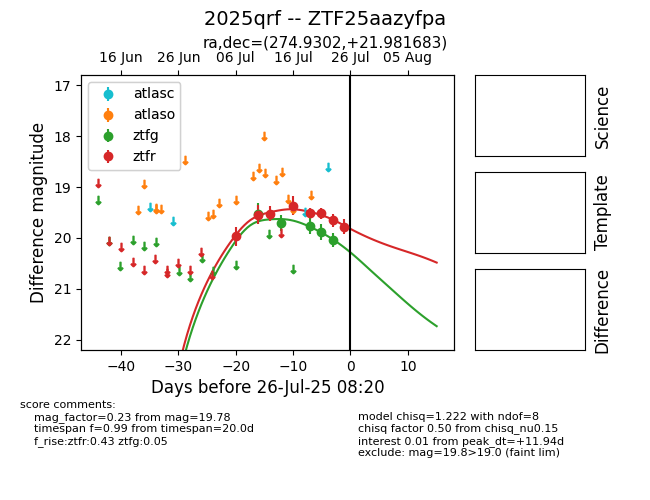

Target 2025qrf at 2025-07-26 08:20, see:
FINK: fink-portal.org/2025qrf
Lasair: lasair-ztf.lsst.ac.uk/objects/2025qrf
ALeRCE: alerce.online/object/2025qrf
TNS: wis-tns.org/object/2025qrf
YSE: ziggy.ucolick.org/yse/transient_detail/2025qrf
alt names
ZTF25aazyfpa (ztf,fink)
2025qrf (tns,yse)
coordinates:
equatorial (ra, dec) = (274.9302,+21.98168)
galactic (l, b) = (49.5894,+16.53065)
photometry
last ztfg=20.03, ztfr=19.78
5 ztfg, 8 ztfr detections
